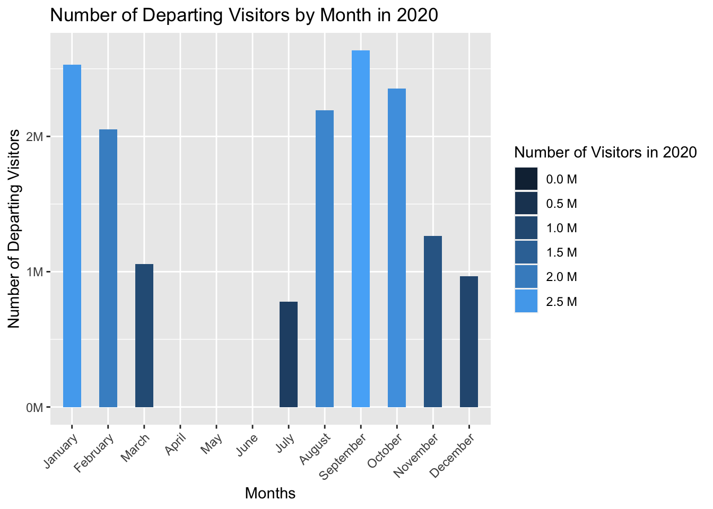

Code
library(ggplot2)
library(dplyr)
library(scales)library(ggplot2)
library(dplyr)
library(scales)To investigate the reasons for coming to Turkey, data will be used in quarter of the year scale. TUIK categorizes these reasons with several topics and since quarters are added, showing all the data we have would be a mess on a single graph. Therefore, filters are used to trim the dates and 2 graphs used to show different categories.
library(ggplot2)
library(dplyr)
library(scales)
reasons_to_come <- readRDS(url("https://github.com/pjournal/mef06g-ramble-on/blob/main/term_project/purposes.rds?raw=true"))
reas_month <- filter(reasons_to_come, !Quarter %in% "Annual")
reas_month[reas_month == 0] <- NA
reas_month$Quarter_II <- reas_month$Quarter
reas_month["Quarter_II"][reas_month["Quarter_II"] == "I"] <- 0.0
reas_month["Quarter_II"][reas_month["Quarter_II"] == "II"] <- 0.25
reas_month["Quarter_II"][reas_month["Quarter_II"] == "III"] <- 0.50
reas_month["Quarter_II"][reas_month["Quarter_II"] == "IV"] <- 0.75
reas_month$Quarter_II <- as.numeric(reas_month$Quarter_II)
reas_month$Quarter_II <- reas_month$Year + reas_month$Quarter_II
reas_month <- reas_month %>% filter(Year > 2017)
ggplot(reas_month, aes(Quarter_II)) +
geom_line(aes(y = ALL_Shoppin, colour = "Shopping")) +
geom_line(aes(y = ALL_Education_training, colour = "Education")) +
geom_line(aes(y = ALL_Health_or_medical_reasons, colour = "Medical Reasons")) +
geom_line(aes(y = ALL_Religion_Pilgrimag, colour = "Religion")) +
geom_line(aes(y = ALL_Business, colour = "Business")) +
geom_line(aes(y = ALL_Other, colour = "Other")) +
ylab("Total Visitors") + xlab("Time") +
scale_x_continuous(breaks=c(2012, seq(2012, 2023, by = 0.25))) +
theme(axis.text.x = element_text(angle = 45, hjust = 1)) +
scale_y_continuous(labels = label_number(suffix = "M", scale = 1e-6))
The second graph
ggplot(reas_month, aes(Quarter_II)) +
geom_line(aes(y = ALL_Visiting_relatives_and_friends, colour = "Visiting Relatives")) +
geom_line(aes(y = ALL_Travel_entertainment_sportive_or_cultural_activities, colour = "Travel/Entertainment/Cultural etc.")) +
ylab("Total Visitors") + xlab("Time") +
scale_x_continuous(breaks=c(2012, seq(2012, 2023, by = 0.25))) +
theme(axis.text.x = element_text(angle = 45, hjust = 1)) +
scale_y_continuous(labels = label_number(suffix = "M", scale = 1e-6))
Tourists seem to visit Turkey for mostly Entertainment purposes which is not surprising. The peak is at the third quarter of the year 2019, which coincides with summer. Third quarters seem stable for this purpose during the years except for the pandemic year. The dramatic decrease in 2020 is appealing. Same period for 2021 still seems a bit short but it gets to the similar levels again in 2022. Visiting relatives and friends follows a similar pattern. People choose to visit their loved ones in mostly summer.
Shopping takes a significant step in the late 2021. This could be related to the starting of the inflation in Turkey and the serious decrease in the value of Turkish Lira.
Similar behavior can be seen in Medical Reasons category as well. Especially Turkey’s dental and hair implantation services are well-known in the globe. These got cheaper and cheaper for tourists which attracted crowds.
One could expect Education category to act similar as well since it’s getting cheaper with the same quality. But the word quality is the key here. Turkey’s most popular universities continue to loose rank in the world and the idea of quantity over quality seems to be in charge.
When it comes to Business, it can be seen that it still does not act like before. Post-pandemic world seem to got used to handle its business with less travel now.